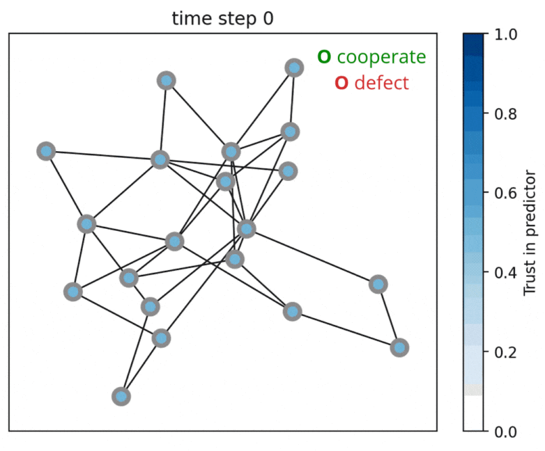

|
António Góis
I am a PhD candidate at Mila and Université de Montréal, supervised by Simon Lacoste-Julien.
My research lies at the intersection of multi-agent systems, mechanism design and performative prediction (when predictions influence reality).
I am interested in prediction tasks with structure among the predicted population, where predictions influence the population's collective action — including election polls, climate change or pandemic forecasts, and financial market models. This raises hard questions, since ignoring the population’s response can impact negatively social welfare, but using predictions to purposefully nudge behaviour may also lead to ethical challenges (Góis et al., AISTATS 2025).
This line of work motivates future links with evolutionary game theory and with economics.
I am also interested in causal inference and structure learning (Deleu et al., UAI 2022), and modelling large-scale human behaviour.
I have completed my MSc in Computer Engineering in Lisbon at Instituto Superior Técnico, studying evolution of cooperation under the supervision of Francisco Santos and Fernando Santos. During this period I used evolutionary game theory to study how reward and punishment impact cooperation in a collective risk dilemma. (Góis et al., Scientific Reports 2019)
In between my MSc and my PhD I spent three years working with André Martins on machine translation, both at Unbabel and Instituto Superior Técnico. This included a 4-month research visit to NYU under the supervision of Kyunghyun Cho.
In a previous life I completed a bachelor on Business Management, and wore a suit and tie at McKinsey & Co for a summer. I have also studied jazz guitar for eight years, including two as a full-time student.
Email: firstname.lastname@gmail.com /
CV /
Google Scholar /
Twitter /
GitHub /
Linkedin
|
|
Publications
Conference
-
Performative Prediction on Games and Mechanism Design
António Góis, Mehrnaz Mofakhami, Fernando P. Santos, Gauthier Gidel*, Simon Lacoste-Julien*
AISTATS 2025
(also ICLR 2025 Workshop Spotlight, see below)

-
Bayesian structure learning with generative flow networks
Tristan Deleu, António Góis, Chris Emezue, Mansi Rankawat, Simon Lacoste-Julien, Stefan Bauer, Yoshua Bengio
UAI 2022
-
Learning Non-Monotonic Automatic Post-Editing of Translations from Human Orderings
António Góis, Kyunghyun Cho, André F. T. Martins
EAMT 2020
-
Translator2Vec: Understanding and Representing Human Post-Editors
António Góis, André F. T. Martins
MT Summit 2019
Journal
-
Reward and Punishment in Climate Change Dilemmas
António Góis, Fernando P. Santos, Jorge M. Pacheco, Francisco C. Santos
Scientific Reports, 2019
Workshop
-
Performative Prediction on Games and Mechanism Design
António Góis, Mehrnaz Mofakhami, Fernando P. Santos, Gauthier Gidel*, Simon Lacoste-Julien*
ICLR 2025 Workshop on Human-AI Coevolution (Spotlight, top 4 out of 23 of accepted papers)
also ICML 2024 Agentic Markets Workshop
-
Human-Aided Discovery of Ancestral Graphs
Tiago Silva, Eliezer de Souza da Silva, António Góis, Dominik Heider, Samuel Kaski, Diego Mesquita, Adele H. Ribeiro
NeurIPS 2024 Workshop — Latinx in AI
also as Human-in-the-Loop Causal Discovery under Latent Confounding using Ancestral GFlowNets on arXiv
-
Predicting Attention Sparsity in Transformers
Marcos Treviso, António Góis, Patrick Fernandes, Erick Fonseca, André F. T. Martins
ACL 2022 Workshop on Structured Prediction for NLP
-
Unbabel's Participation in the WMT19 Translation Quality Estimation Shared Task
Fabio Kepler, Jonay Trénous, Marcos Treviso, Miguel Vera, António Góis, M. Amin Farajian, António V. Lopes, André F. T. Martins
ACL 2019 Workshop — WMT 2019 Shared task
Service and Teaching Assistantship
|